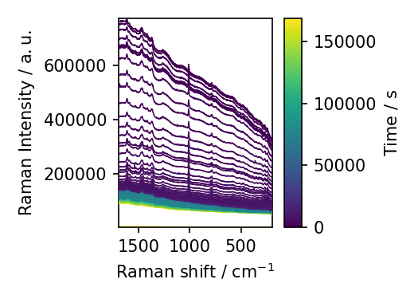
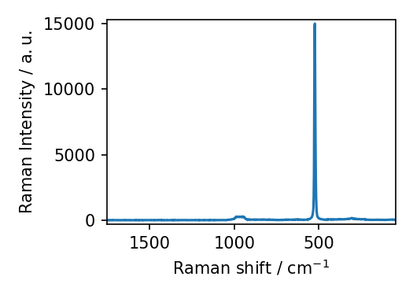
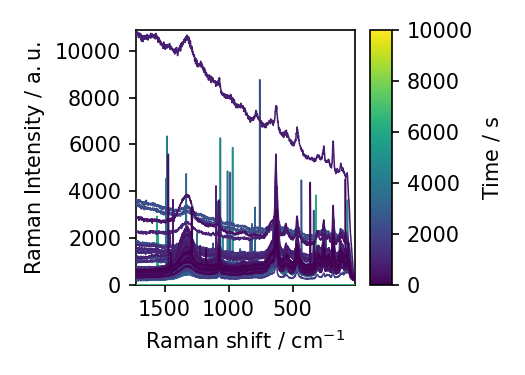
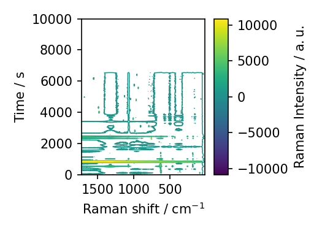
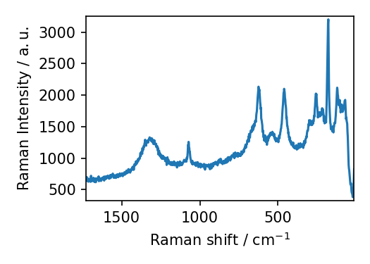
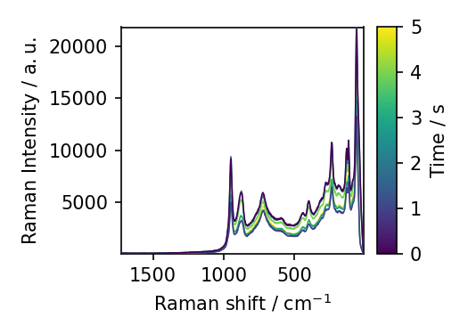

Note
Click here to download the full example code
Loading RAMAN experimental file¶
Here we load an experimental SPG file (OMNIC) and plot it.
import spectrochempy as scp
define the folder where are the spectra
datadir = scp.preferences.datadir
ramandir = datadir / "ramandata"
A = scp.read_labspec('Activation.txt', directory=ramandir)
A.plot()
A = scp.read_labspec('532nm-191216-Si 200mu.txt', directory=ramandir)
A.plot()
A = scp.read_labspec('serie190214-1.txt', directory=ramandir)
A.plot(colorbar=True)
A.plot_map(colorbar=True)
A = scp.read_labspec('SMC1-Initial RT.txt', directory=ramandir)
A.plot()





Out:
<AxesSubplot:xlabel='Raman shift $\\mathrm{/\\ \\mathrm{cm}^{-1}}$', ylabel='Raman Intensity $\\mathrm{/\\ \\mathrm{a.u.}}$'>
Open a dialog - note the presence of the keyword directory
B = scp.read_labspec(directory=ramandir)
this pack all spectra of the subdir directory (without dialog - look at the difference above)
B = scp.read_labspec(ramandir / 'subdir')
B.plot()
scp.show()

Total running time of the script: ( 0 minutes 3.194 seconds)